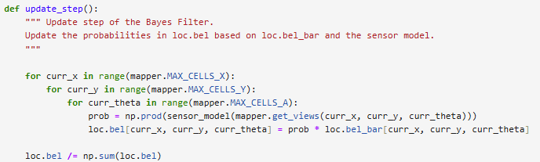
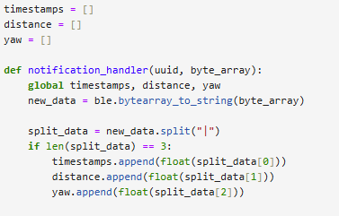
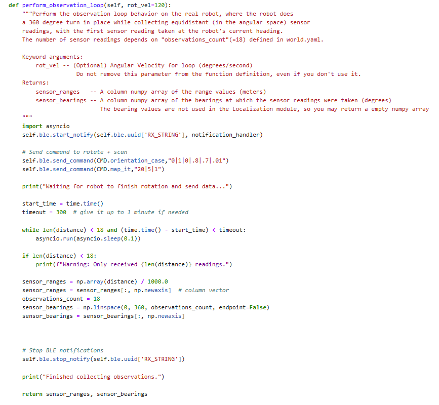
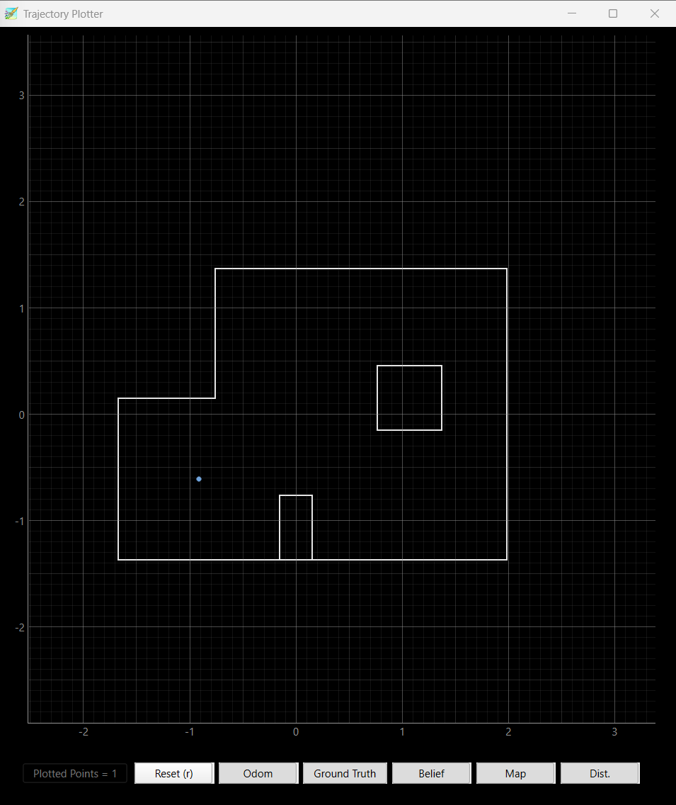
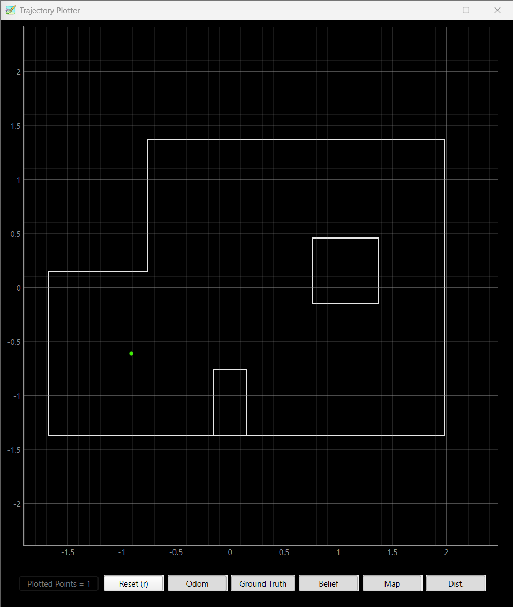
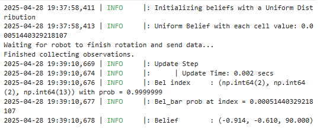
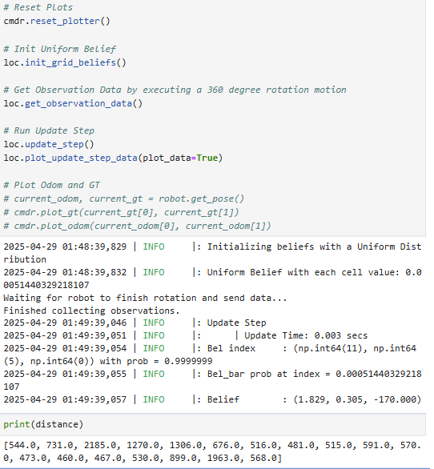
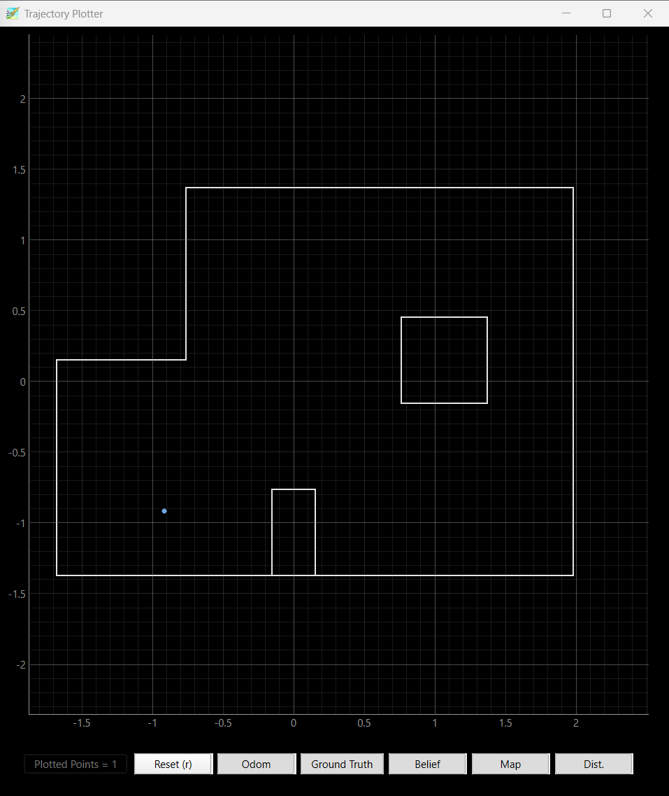
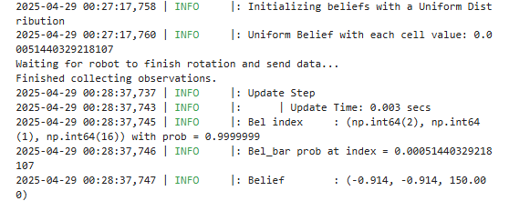
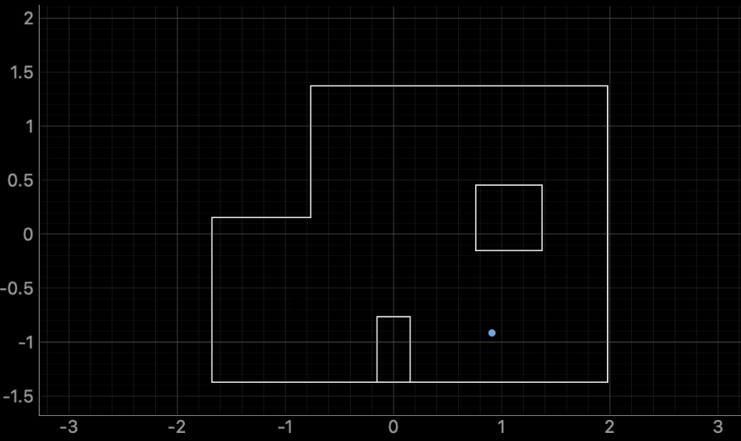

Lab 10: Localization (sim)
In this lab, I built on my work from Lab 9 (orientation mapping) and Lab 10 (Bayes filter localization in simulation) to perform localization on the real robot. Using only the update step of the Bayes filter, I tried to localize my robot (Depresso) at specific marked locations in the arena.
Simulation
First, I verified that my Bayes filter implementation was working by running the provided lab11_sim.ipynb notebook in simulation as shown from the screenshot and the video below.

Reality
After verifying that that the simulation was working, I moved on to the real robot.
Since we cannot determine the ground truth of the robot, we only were running the update step using the sesor measurment to localize our robot.
The method that I used for this lab was that I reused the code from lab 9 to command the robot to spin a circle and scan the map in 20 degree increments.
Once the robot was done scanning, it would then send the data which would then be checked to ensure there was 18 data points and it would timeout after 5 minutes.
If there was 18 data points, then it would be divided by 1000 to get it in meters which would be out sesnor ranges. Finally, sensor bearings was the increments that the robot was turning at each point.
Notification Handler + perform_observation_loop:


The four marked poses in the lab are:
(-3 ft ,-2 ft ,0 deg)
(0 ft,3 ft, 0 deg)
(5 ft,-3 ft, 0 deg)
(5 ft,3 ft, 0 deg)
I used the points above (marked area locations) as known poses and ran the update step at each of these points.
Results
Below are the results for each marked location in the arena. I forgot to add the green dot in the plot where my belief after the Bayes Update step. However, I added a plot where the ground truth would be next to my plot with blue dot is the belief after the Bayes update step.
(-3 ft ,-2 ft ,0 deg):



For this position, the robot localized itself very close to the ground truth. The belief was tightly clustered around the correct spot, showing that the Bayes update was effective at this location.
(0 ft,3 ft, 0 deg)


Localization at this point worked really well. The belief was almost exactly on top of the ground truth location, or at least very close from what could be perceived visually. It showed that the robot’s scan was well-aligned and matched the map features nicely.
(5 ft,-3 ft, 0 deg)


I had issues with this point. From the results, it was not very accurate from the ground truth. The reason why the robot may think
it is more up than it truly is is that the box may think that box is the wall.
(5 ft,3 ft, 0 deg)


This final position was a little off, but overall the robot was still able to localize itself reasonably close to the correct spot. The belief was slightly shifted but not by much, and the general location was correct.
Additional tests:
I ran the robot mutltiple times at the locations to see if the robot was able to localize itself.
(-3 ft ,-2 ft ,0 deg)


(0 ft,3 ft, 0 deg)


(5 ft,-3 ft, 0 deg)


(5 ft,3 ft, 0 deg)


Conclusion
This lab was a great way to see that my robot is working and can localize itself in the real world! I am not sure why in the one corner it was harder to localize the robot. However, I will have to look into this for the next lab.
I referenced Stephan's code for lab 11! I also worked with Sana and Lulu on this lab!